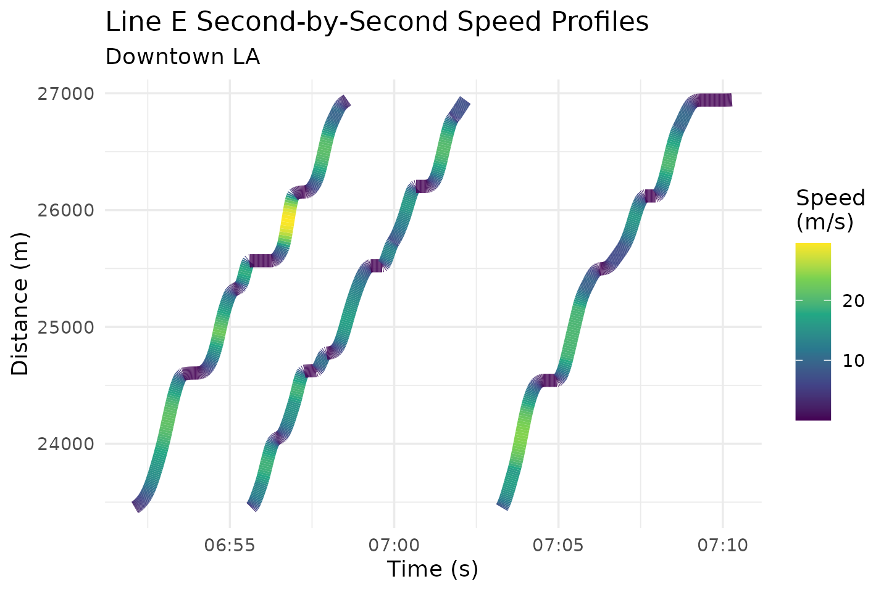
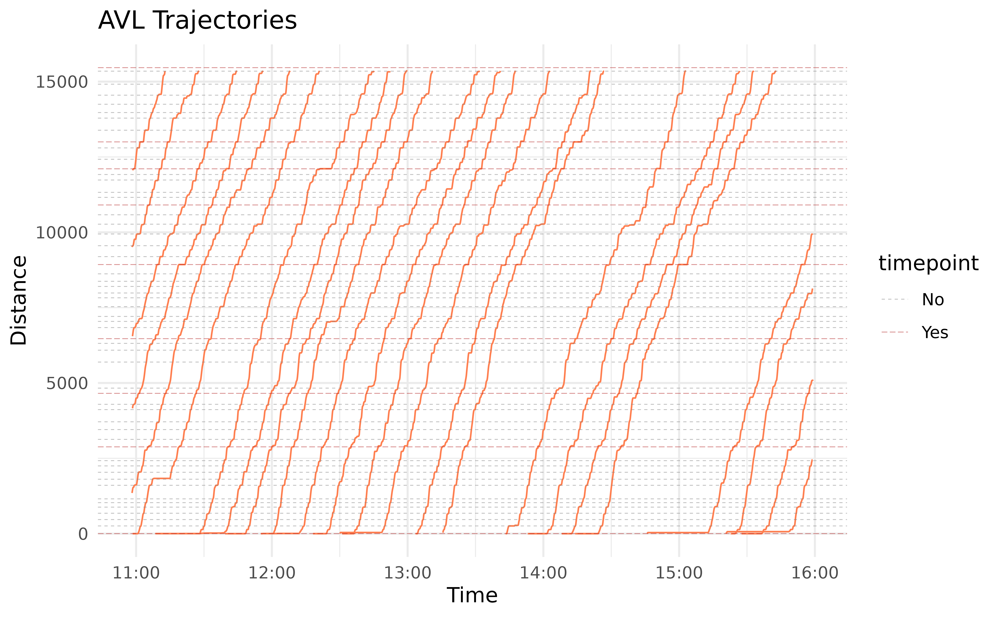
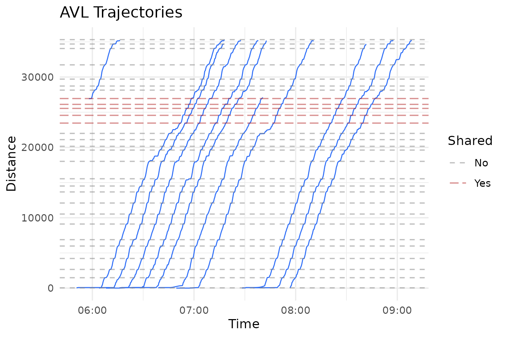
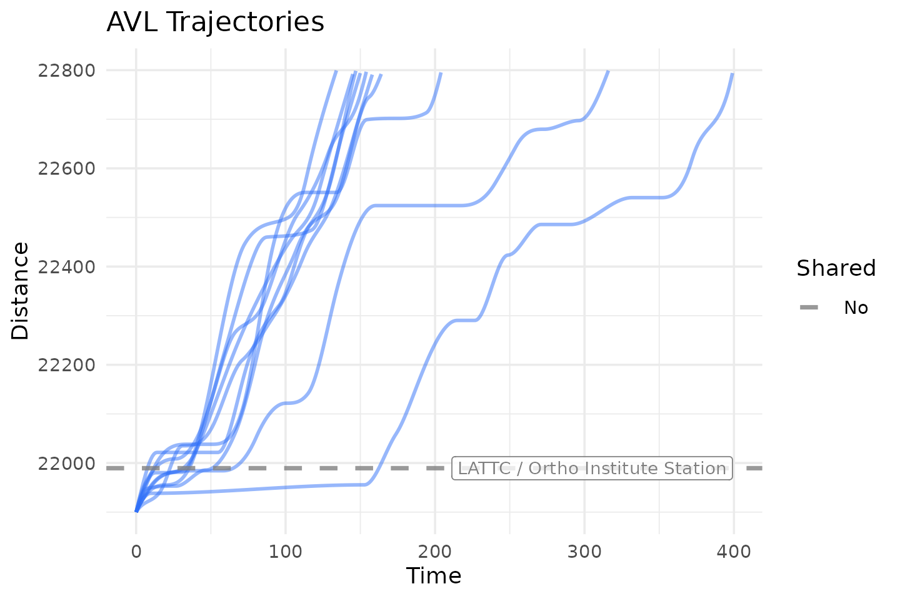

Introduction
In the previous vignette
(vignette("avl-data-workflow")), we saw how we can use
transittraj to clean our AVL data. We took care of
outliers, deadheading trips, noise, and non-monotonic observations. In
this vignette, we’ll apply the cleaned data (lineE_mono) to
fit a trajectory function.
Let’s begin by loading the libraries we’ll be using:
Fitting a Trajectory Curve
Our ultimate goal is to fit an interpolating curve describing the
position of a transit vehicle at any point in time. Ideally, we could
fit an inverse curve, giving us the time the transit vehicle passes any
point in space. We can do both using
get_trajectory_fun().
transittraj supports a handful of methods for fitting
these functions. The simplest is linear interpolation without an
inverse. For more fine-grained analyses, though, we recommend fitting a
velocity-informed piecewise cubic interpolating polynomial.
This uses the speeds and distances, corrected for monotonicity, to fit a
cubic spline between each observation. This is the type of curve that
get_trajectory_fun() will fit by default
(interp_method = "monoH.FC" and
use_speeds = TRUE).
Using the data we cleaned in the previous vignette, let’s fit our trajectory functions:
# Run function
lineE_traj <- get_trajectory_fun(distance_df = lineE_mono,
interp_method = "monoH.FC",
use_speeds = TRUE,
find_inverse_fun = TRUE)transittraj stores the fit curves in a special object
class. This object stores a list of fit trajectories, one for each trip,
as well as the time and distances ranges for each trip. We can use
summary() to take a look inside the object:
summary(lineE_traj)
#> ------
#> AVL Group Trajectory Object
#> ------
#> Number of trips: 11
#> Total distance range: 0.6366599 to 35292.87
#> Total time range: 1779886240 to 1779898116
#> ------
#> Trajectory function present: TRUE
#> --> Trajectory interpolation method: monoH.FC
#> --> Maximum derivative: 3
#> --> Fit with speeds: TRUE
#> Inverse function present: TRUE
#> --> Inverse function tolerance: 0.01
#> ------Interpolating
How do you use the fit curve to actually interpolate at new points?
We recommend using predict(), as this will ensure that the
curves aren’t used to extrapolate beyond the range of each trip. Using
predict(), there are three main ways we can interpolate:
retrieve distance values from times, retrieve time values from
distances, or retrieve time & distance pairs over a spatial
range.
Interpolating for Distance from Time
Let’s say you want to know where every vehicle is at a certain point
in time. We can do that by providing new_times to
predict(). Let’s see below:
# Run interpolating function
lineE_time_interp <- predict(
object = lineE_traj,
new_times = c(1779887000, 1779887500)
)
# Print full results
print(lineE_time_interp)
#> event_timestamp trip_id_performed deriv interp
#> 1 1779887000 63383915 0 83.127539
#> 2 1779887000 63384093 0 28716.983901
#> 3 1779887500 63383915 0 3183.861194
#> 4 1779887500 63383917 0 7.874249
#> 5 1779887500 63383991 0 79.708636
#> 6 1779887500 63384093 0 34439.361240Here, interp will be the distance in meters from the
route’s beginning, as indicated by the deriv column, which
tells us the derivative degree each row corresponds to. You’ll notice
that, even though we have 11 trips, there were only two to four
distances for each timepoint. This is because predict()
will only interpolate a distance value for trips that were actually
running at that point in time.
Using a similar function call, we can also find the speed of the
vehicle at any point in time by setting the deriv parameter
in predict():
# Run interpolating function
lineE_speed_interp <- predict(
object = lineE_traj,
new_times = c(1779887000, 1779887500),
deriv = 1
)
# Print results
print(lineE_speed_interp)
#> # A tibble: 6 × 4
#> event_timestamp trip_id_performed deriv interp
#> <dbl> <chr> <dbl> <dbl>
#> 1 1779887000 63383915 1 0.00000355
#> 2 1779887000 63384093 1 3.06
#> 3 1779887500 63383915 1 16.4
#> 4 1779887500 63383917 1 0.0000517
#> 5 1779887500 63383991 1 0.00000880
#> 6 1779887500 63384093 1 10.4Here, interp will be the speed in meters per second.
Finding speeds requires starting from time values; we cannot get speeds
from distance values. Finally, if so desired, the input to
deriv can be vectorized, allowing you to calculate both
position and speed (and acceleration, and jerk!) with one function
call:
# Run interpolating function
lineE_vec_interp <- predict(
object = lineE_traj,
new_times = c(1779887000, 1779887500),
deriv = c(0, 1)
)
# Print results
print(lineE_vec_interp)
#> # A tibble: 12 × 4
#> event_timestamp trip_id_performed deriv interp
#> <dbl> <chr> <dbl> <dbl>
#> 1 1779887000 63383915 0 8.31e+1
#> 2 1779887000 63383915 1 3.55e-6
#> 3 1779887000 63384093 0 2.87e+4
#> 4 1779887000 63384093 1 3.06e+0
#> 5 1779887500 63383915 0 3.18e+3
#> 6 1779887500 63383915 1 1.64e+1
#> 7 1779887500 63383917 0 7.87e+0
#> 8 1779887500 63383917 1 5.17e-5
#> 9 1779887500 63383991 0 7.97e+1
#> 10 1779887500 63383991 1 8.80e-6
#> 11 1779887500 63384093 0 3.44e+4
#> 12 1779887500 63384093 1 1.04e+1Interpolating for Time from Distance
One of the most common applications of the fit trajectory curve is to
find the time at which each vehicle passed a point along its route. To
do this, we’ll use predict() with the
new_distances parameter. We’ll begin by finding the
distance of each stop along the route using
get_stop_distances():
# First, find stop IDs served by Line A
lineA_stop_ids <- filter_by_route(gtfs = lacmta_gtfs,
route_ids = "801")$stops %>%
pull(stop_id)
# Next, find stop distances and join the timepoints column
lineE_stops <- get_stop_distances(gtfs = lineE_gtfs,
shape_geometry = lineE_shape,
project_crs = la_CRS) %>%
# Find whether they are shared with Line A
mutate(Shared = (stop_id %in% lineA_stop_ids),
Shared = if_else(condition = Shared,
true = "Yes",
false = "No")) %>%
# Polish up the result
select(stop_id, stop_name, Shared, distance) %>%
arrange(distance)
# Print header
head(lineE_stops)
#> # A tibble: 6 × 4
#> stop_id stop_name Shared distance
#> <chr> <chr> <chr> <dbl>
#> 1 80139 Downtown Santa Monica Station No 41.2
#> 2 80138 17th Street / SMC Station No 1479.
#> 3 80137 26th Street / Bergamot Station No 2656.
#> 4 80136 Expo / Bundy Station No 4212.
#> 5 80135 Expo / Sepulveda Station No 5983.
#> 6 80134 Westwood / Rancho Park Station No 6888.Now that we have some distances, let’s interpolate using
predict():
# Run interpolating function
lineE_stop_crossings <- predict(
object = lineE_traj,
new_distances = lineE_stops
)
# Print header
head(lineE_stop_crossings)
#> # A tibble: 6 × 6
#> stop_id stop_name Shared distance trip_id_performed interp
#> <chr> <chr> <chr> <dbl> <chr> <dbl>
#> 1 80139 Downtown Santa Monica Station No 41.2 63383915 1.78e9
#> 2 80139 Downtown Santa Monica Station No 41.2 63383917 1.78e9
#> 3 80139 Downtown Santa Monica Station No 41.2 63383949 1.78e9
#> 4 80139 Downtown Santa Monica Station No 41.2 63383991 1.78e9
#> 5 80139 Downtown Santa Monica Station No 41.2 63384002 1.78e9
#> 6 80139 Downtown Santa Monica Station No 41.2 63384022 1.78e9Now we have the crossing time, labeled interp at each
stop for each trip. The interpolated times are in seconds of epoch time.
You’ll notice that this preserves all other fields in the input
new_distances dataframe (including stop_id,
stop_name, and Shared).
Interpolating for Time & Distance Pairs Over a Range
The final interpolation method allows you to specify a range of
distances, and a timestep over which to interpolate within this range.
Here, transittraj will use your trajectory’s inverse
function to find the time each trip enters and exits the
distance_lims, then interpolate every timestep
seconds that the vehicle stays in that range.
To see what this does, let’s interpolate some timepoints for all trips through downtown LA. We’ll begin by finding distances of the first and last stop Line E shares with Line A:
# Get distance limits of U St between 13th and 14th
downtown_stops <- lineE_stops %>%
filter(Shared == "Yes") %>%
pull(distance)
downtown_lims <- c(min(downtown_stops),
max(downtown_stops))
print(downtown_lims)
#> [1] 23453.64 26944.68Next, we can put this into predict() using the
distance_lims parameter, alongside a timestep
of 1 second. As above, we can vectorize the deriv input to
find both position and speed at each timestep:
# Run interpolating function
lineE_downtown_interp <- predict(
object = lineE_traj,
distance_lims = downtown_lims,
timestep = 1,
deriv = c(0, 1)
)
# Print header
head(lineE_downtown_interp)
#> # A tibble: 6 × 4
#> trip_id_performed event_timestamp deriv interp
#> <chr> <dbl> <dbl> <dbl>
#> 1 63383915 1779889926. 0 23454.
#> 2 63383915 1779889926. 1 2.60
#> 3 63383915 1779889927. 0 23456.
#> 4 63383915 1779889927. 1 2.89
#> 5 63383915 1779889928. 0 23459.
#> 6 63383915 1779889928. 1 3.18We can see that, for the printed trip, the first timepoint occurs at
the beginning of downtown_lims, then
event_timestamp increments 1 second per row afterwards. To
better understand see what this did, we’ll generate a plot of these
generated points. Below, we first “pivot” our interpolated dataframe to
make separate columns for distance and speed interpolations
(interp_0 and interp_1, respectively):
# Pivot, for seprate columns for dist & speed
lineE_downtown_pivot <- lineE_downtown_interp %>%
# Order by time, then filter to the first three complete
arrange(event_timestamp) %>%
filter(trip_id_performed %in% unique(trip_id_performed)[2:4]) %>%
# Pivot to make distance & speed separate columns
pivot_wider(id_cols = c("trip_id_performed", "event_timestamp"),
names_from = "deriv", names_glue = "interp_{.name}",
values_from = "interp") %>%
# Convert to timezone
mutate(event_timestamp = as.POSIXct(event_timestamp,
tz = "America/Los_Angeles"))
head(lineE_downtown_pivot)
#> # A tibble: 6 × 4
#> trip_id_performed event_timestamp interp_0 interp_1
#> <chr> <dttm> <dbl> <dbl>
#> 1 63383915 2026-05-27 06:52:06 23454. 2.60
#> 2 63383915 2026-05-27 06:52:07 23456. 2.89
#> 3 63383915 2026-05-27 06:52:08 23459. 3.18
#> 4 63383915 2026-05-27 06:52:09 23463. 3.45
#> 5 63383915 2026-05-27 06:52:10 23466. 3.71
#> 6 63383915 2026-05-27 06:52:11 23470. 3.96Next, we’ll draw these points as trajectory lines, with the distance
column interp_0 used for the y-axis, and the speed column
interp_1 used to apply a color gradient:
# Create plot
downtown_plot <- ggplot(data = lineE_downtown_pivot) +
# Add points
geom_line(aes(group = trip_id_performed,
x = event_timestamp,
y = interp_0, # y from interp at deriv 0, i.e. distnace
color = interp_1), # color from interp at deriv 1, i.e. speed
linewidth = 3, alpha = 1) +
# Color points by trip
scale_color_viridis_c(name = "Speed\n(m/s)") +
# Theming
theme_minimal() +
labs(x = "Time (s)",
y = "Distance (m)",
title = "Line E Second-by-Second Speed Profiles",
subtitle = "Downtown LA")
downtown_plot
Through this use of predict(), it becomes very easy to
identify individual stop-and-go cycles through regions of interest.
You could retrieve identical results by giving predict()
a new_times sequence spanning the range of the trajectory’s
event_timestamp’s, then filtering to the desired distance
range. For large datasets – spanning, for example, months –, however,
this would require a massive sequence. If an inverse function
is available, using distance_lims and timestep
is a much more efficient way to generate high-resolution trajectory
profiles for a large number of trips, especially if you are interested
in studying a specific region in space.
Visualizing Trajectories
Quick Plots
Now its time for the fun part – plotting our trajectory curves. We
can use plot() to easily generate a plot of all
trajectories:
plot(lineE_traj)
plot() is intended for quick visualizations of
trajectories, and as such does not allow for much customization. In the
next section, we’ll use plot_trajectory() to create more
interesting plots.
Detailed Trajectories
For more customization, we recommend using
plot_trajectory(). In addition to a trajectory object, you
can add a dataframe of feature distances, such as the
lineE_stops dataframe we made earlier. Most layer
aesthetics can be controlled using input parameters. For features and
trajectories, the linetypes and colors can also be mapped to attributes
of that specific layer using a dataframe:
# Set formatting options for Line E stops
stop_formatting <- data.frame(Shared = c("Yes", "No"),
color = c("firebrick", "grey50"),
linetype = c("longdash", "dashed"))For mapping dataframes, at least one column must match a column in
the layer being mapped to. The other columns must be color
and/or linetype, telling transittraj which
feature they describe.
We can plug all that in to plot_trajectory() to generate
our formatted plot:
# Run plotting function
traj_plot <- plot_trajectory(
# Provide input data
trajectory = lineE_traj,
feature_distances = lineE_stops,
# Format features
feature_color = stop_formatting,
feature_type = stop_formatting,
feature_width = 0.5, feature_alpha = 0.5,
# Format trajectories
traj_color = "#2f6ff8",
traj_width = 0.4, traj_alpha = 1
)
traj_plot
It’s hard to see what’s actually going on here. The benefits of the
cleaning we did, and of fitting a spline trajectory, become much more
apparent when we zoom in. Below we use the distance_lim
parameter to zoom into a stretch of track between LATCC and Pico
Station. This section has a handful of tightly-spaced intersections,
including Flower St & Washington Blvd, where Line E joins Line
A.
We’ll use two additional plotting parameters here. First,
center_trajectories will center each trajectory to start at
the same point in time. Second, label_field will create a
label on our feature lines using the specified field from
lineE_stops.
# Set parameters
flower_st_lims <- c(21900, 22800)
# Run function
flower_st_plot <- plot_trajectory(
# Provide input data
trajectory = lineE_traj,
feature_distances = lineE_stops,
center_trajectories = TRUE,
distance_lim = flower_st_lims,
timestep = 1,
# Format fetures
feature_color = stop_formatting,
feature_type = stop_formatting,
feature_width = 1, feature_alpha = 0.8,
# Format trajectories
traj_width = 0.8, traj_alpha = 0.5, traj_color = "#2f6ff8",
# Add labels
label_field = "stop_name", label_pos = "right",
label_alpha = 0.8
)
flower_st_plot
We can glean some insights from this. Every trip stops at LATTC’s station. The Flower & Washington intersection, where Line A joins Line E, is located roughly at 22,550 meters. We can see that most trips come to a stop near this intersection as well. A handful of trips stop or slow down for the other, smaller signals up- or down-stream of Flower & Washington.
Check out help(plot_trajectory) for a full discussion of
the formatting features available.
Line Animations
Another fun way to visualize transit vehicle trajectories is to
animate them. Use plot_animated_line() to animate vehicles,
as points, moving along a straight line.
The formatting process works very similarly with
plot_animated_line() as it does with
plot_trajectory(). A dataframe can be used to map the
outline color and shape attributes of stop and
vehicle points to their attributes.
# Set parameters
stop_formatting <- data.frame(Shared = c("Yes", "No"),
outline = c("firebrick4", "grey30"),
shape = c(22, 21))For this plot, we’ll zoom in to the Florida Ave-U St corridor of the route. Now we can generate our line animation:
# Set distance limits
downtown_lims <- c(20500, 29000)
# Run function
line_anim <- plot_animated_line(
# Add input data
trajectory = lineE_traj,
feature_distances = lineE_stops,
distance_lim = downtown_lims,
timestep = 1,
# Format vehicles
veh_outline = "#2f6ff8", veh_stroke = 2,
# Format features
feature_outline = stop_formatting,
feature_shape = stop_formatting,
feature_size = 4, feature_stroke = 1.5,
# Add labels
label_field = "stop_name",
label_pos = "right", label_size = 3,
# Format route & vehicles
route_color = "#f43155",
veh_alpha = 0.9, veh_size = 4
)
line_animYou can view the line animation online at this link. The animation shows us that most trips stop primarily at their stations, usually only briefly. There are, though, occasional slow downs between stations, most commonly between LATTC and Pico (as we saw in the trajectory plot above). Through the rest of downtown, movements seem to be smoother.
Map Animations
The final visualization we’ll make is an animated map. The concept is similar to the animated line we saw above, but instead of simplifying the route, we’ll draw it spatially and show the vehicles traveling through the city.
The function plot_animated_map() has formatting and
feature options very similar to the previous two visualization
functions. We can reuse the formatting options from
plot_animated_line() here.
# Run function
map_anim <- plot_animated_map(
# Add trajectory, shape, & feature data
trajectory = lineE_traj,
shape_geometry = lineE_shape,
feature_distances = lineE_stops,
# Format features
feature_outline = stop_formatting,
feature_shape = stop_formatting,
feature_size = 4, feature_stroke = 3,
# Format route
route_color = "#f43155", route_width = 4,
bbox_expand = 1000,
# Format vehicles
veh_size = 6, veh_stroke = 3,
veh_outline = "#2f6ff8", veh_alpha = 0.9
)
map_animYou can view the map animation line at this link. These
animations help give additional spatial context to some patterns noticed
earlier. Many slowdowns between stations that were visible in the
trajectories now clearly occur at intersections. For example, a
particularly long delay at Flower & Washington – just south of the
I-10 freeway – is visible at around 0:34. We can also see some potential
bunching: two trains get fairly close on Exposition Blvd, just southwest
of downtown, at around 0:14. They stay close through downtown, and
finish their trips only a ~3 minutes apart at 0:25. If one wanted to
zoom into a specific region, distance_lims can be used just
as before.
Conclusion
In this vignette we saw how we can easily fit an interpolating
trajectory curve to our cleaned AVL data. We used this to interpolate
for new time, distance, and speed points along the route. We also
explored some ways we can plot and visualize the trajectories. Future
vignettes (vignette("articles/indygo-signals")) explore
real-world applications of trajectories.